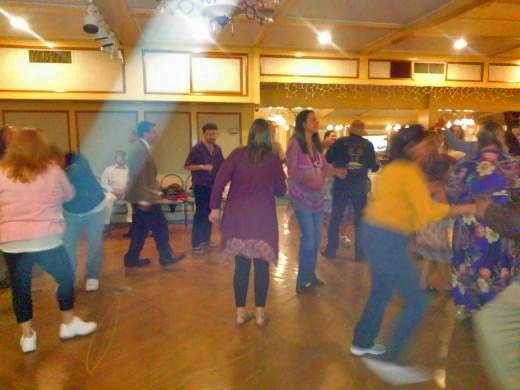
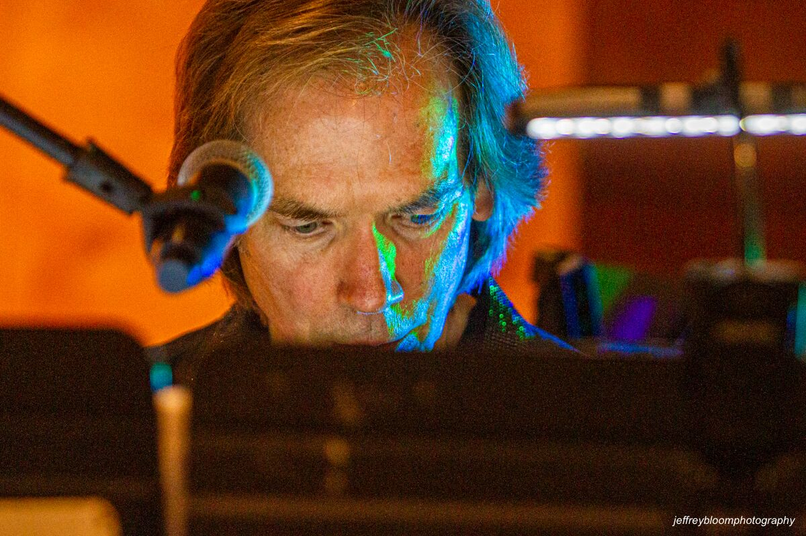

Set one
Sweet Soul Music - Sam Cooke
Hold on I’m Coming - Isaac Hayes
Dancing in the Street - The Vandellas
In the Midnight Hour - Wilson Pickett
Save the last dance for me - The Drifters
Let the good times roll - BB King version
I Can’t turn you lose - Otis Redding
Hard to Handle - The Commitments
Crazy - Patsy Cline
My Girl - Smokey Robinson
Treat her Right - The Commitments
Brick House - The Commodores
Set two
25 or 6 to 4 - Chicago
Love Man - Otis Redding
Blue Suede Shoes - Elvis Presley
Four Tops Medley - Four Tops
Papa’s Got A brand New Bag - James Brown
House of the Rising Sun - The Animals
Unchain My Heart - Joe Cocker
Give me just a little more time - The Chairman of the Board
Brown Eyed Girl - Van Morrison
Satisfaction - The Rolling Stones
Set three
I Feel Good - James Brown
Doing it Right - Powder Blues
Crocodile Rock - Elton John
Stray Cat Strut - Brian Setzer
Respect - Aretha Franklin
Ain’t no Mt High Enough - The Temptations
September - Earth Wind and Fire
Dance to the Music - The Family Stone
I heard it through the Grape Vine - Gladys Knight
Time Will Tell - Tower Of Power
When a Man Loves a Woman - Otis Redding
Ain’t Too Proud to Beg - The Temptations
Set four
Old Time Rock n’ Roll - Bob Seger
River Deep Mountain High - Tina Turner
Mony Mony - Billy Idol
Under The Board Walk - The Drifters
Midnight Train To Georgia - Gladys Night
I will Survive - Gloria Gaynor
Sitting on the Dock of the Bay - Otis Redding
Georgia - Ray Charles
Higher and Higher - Jackie Wilson
Stand By Me - Ben E. King
Simply The Best - Tina Turner
Wooly Bully - Sam The Sham & The Pharaohs
Set five
Jail House Rock - Elvis Presley
The Letter - Joe Cocker
The House is Rockin' - Brian Setzer
Real Wild Child - Ivan
Chain of Fools - Aretha Franklin
Soul Man - Blues Brothers
Turn on your Love Light - Blues Brothers
What Have I Been Drinkin' - Powder Blues Band
Proud Mary - Tina Turner
Try A Little Tenderness - Otis Redding
Mustang Sally - Wilson Pickett
Shout - The Isley Brothers
Birthday - The Beatles